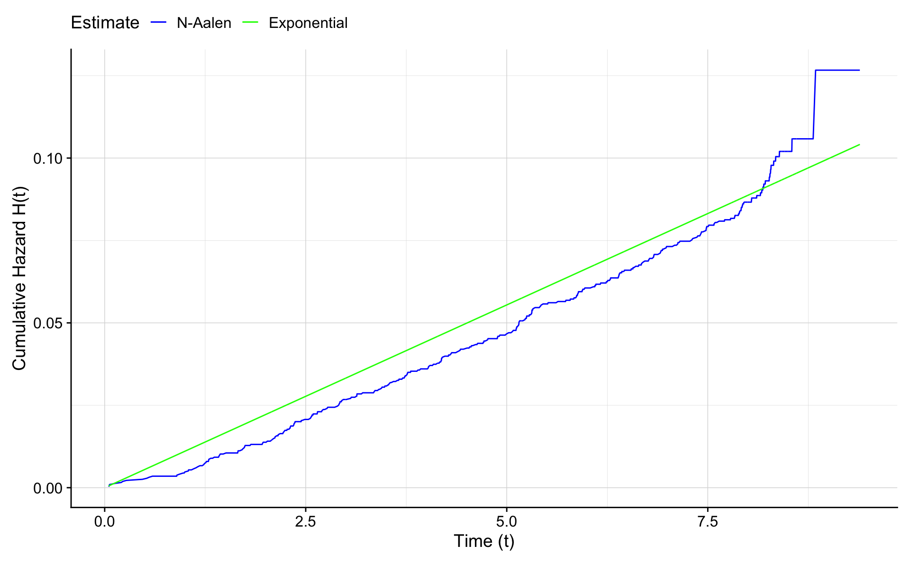

Chapter 5 Parametric Proportional Hazards Models
library(muhaz)
library(flexsurv)
library(eha)
library(mice) # for Nelson Aalen
library(epitools)
library(rms)
library(bshazard)data("wcgs")
wcgs$age0q5 <- cut(wcgs$age0,breaks=quantile(wcgs$age0,seq(0,1,0.2)),include.lowest=T,right=FALSE)
wcgs$behpat0f <- factor(wcgs$behpat0,levels=1:4,label=c("A1","A2","B1","B2"))
wcgs$dibpat0f <- factor(wcgs$dibpat0,levels=0:1,label=c("B","A"))
wcgs$smoker <- ifelse(wcgs$ncigs0>0,1,0)
wcgs$smokerf <- factor(wcgs$smoker,levels=c(1,0),labels=c("Yes","No"))
wcgs$smokerfny <- factor(wcgs$smoker,levels=c(0,1),labels=c("No","Yes"))
wcgs$heightcm <- wcgs$height0*2.54
wcgs$weightkg <- wcgs$weight0*0.45359237
wcgs$bmi <- wcgs$weightkg / (wcgs$heightcm/100)^2
wcgs$cholmmol = wcgs$chol/39
wcgs$chd69f <- factor(wcgs$chd69,levels=c(1,0),labels=c("Yes","No"))
wcgs$chd69fny <- factor(wcgs$chd69,levels=c(0,1),labels=c("No CHD","CHD"))
wcgs$bmiq5 <- cut(wcgs$bmi,breaks=quantile(wcgs$bmi,seq(0,1,0.2)),include.lowest=T,right=FALSE)
wcgs$time169y <- wcgs$time169/365.24
# restricted followup to 5 years
wcgs$time169y5 <- pmin(wcgs$time169y,5)
wcgs$chd695 <- (wcgs$chd69==1 & wcgs$time169y <=5)
wcgs$agec <- wcgs$age0 - 46
wcgs$cholmmolc <- wcgs$cholmmol - 5.8
wcgs$sbpc <- wcgs$sbp0 - 1285.1 Introduction
We continue to use the wcgs data included with the epitools package. WCGS stands for the Western Collaborative Group Study.
If the rate of events follow a Poisson distribution it can be shown that the time between events, or the time until next event, follow an exponential distribution.
Overall incidence or hazard rate in the WCGS data was
## [1] 23176.25## [1] 257## [1] 0.01108894For every 1000 person years:
## [1] 11.08894The incidence can also be estimated from the Poisson model using an offset. The term offset means that we standardize the number of outcomes by the time. We use log of time because the Poisson model has a log-link.
## (Intercept)
## 11.08894## 2.5 % 97.5 %
## (Intercept) 9.812822 12.53101The cumulative incidence is then simply \(\lambda t\) after observation length \(T=t\). This is an assumption that needs further inspection.
5.2 Exponential survival function for the survival time
We’ll begin by plotting the hazard function, which is the rate of events over a small time interval. Given that time \(t\) has passed, the probability an event will take place at time \(T\) in the interval between \(t\) and \(t+\delta\) is P[t T < t + |T t].
The hazard rate is this probability standardized by a small time interval, and then we get a rate when the interval goes to zero length: \[ h(t) = \frac{P[t \le T < t + \delta|T \ge t]}{\delta}. \]
Note that \(h() \ge 0\).
The connection between the exponential distribution and the Poisson model is that if the Poisson model holds then the exponential model holds for the time and the hazard is constant: \[ h(t) = \lambda \]
We’ll estimate the hazard using the muhaz function in R. The rate from the Poisson model, assuming constant hazard, is superimposed.
## Iterations: relative error in phi-hat = 1e-04
## phi= 1.400538 sv2= 0.03443796 df= 10.75369 lambda= 40.66844
## phi= 1.428413 sv2= 0.008229519 df= 7.815714 lambda= 173.5718
## phi= 1.462473 sv2= 0.002951656 df= 5.667443 lambda= 495.4755
## phi= 1.493406 sv2= 0.001583692 df= 4.551427 lambda= 942.9903
## phi= 1.514479 sv2= 0.001057151 df= 4.007546 lambda= 1432.604
## phi= 1.52876 sv2= 0.0007761689 df= 3.701527 lambda= 1969.622
## phi= 1.539557 sv2= 0.00059308 df= 3.490586 lambda= 2595.868
## phi= 1.548565 sv2= 0.0004582588 df= 3.321545 lambda= 3379.238
## phi= 1.556631 sv2= 0.0003512205 df= 3.171027 lambda= 4432.063
## phi= 1.564196 sv2= 0.0002626861 df= 3.026499 lambda= 5954.622
## phi= 1.571455 sv2= 0.0001886837 df= 2.88026 lambda= 8328.516
## phi= 1.578402 sv2= 0.0001280916 df= 2.727957 lambda= 12322.45haz.frame <- data.frame(x=fitm$time,y=fitm$hazard)
ggplot(haz.frame,aes(x,y))+geom_line()+geom_hline(yintercept = exp(coef(fit0)),lty=2)+
xlab("t (years)") + ylab("h(t)")It seems that the rate is increasing along with the duration of the follow up. The cohort is getting older as time passes and there is no renewal of younger men into the cohort.
The survival function for an exponential distribution is \[ S(t) = P[T>t] = \exp(-\lambda t). \]
The cumulative hazard function \(H\) is the integral of the hazard function or \[ H(t) = \int_0^t h(u) du = \int_0^t \lambda \, du = \lambda t. \]
Note that a general result from survival analysis says that \[ S(t) = \exp(-H(t)) \]
The flexsurv package can be used to get an estimate for \(\lambda\) for the exponential distribution. Note that there are two different ways to present the exponential and the Weibull distributions in survival analysis. Either using the proportional hazards (PH) definition or the accelerated failure time (AFT) definition. We’ll consider the PH approach. It is possible to compute estimates from one approach to the other.
Recall the proportional hazards model: \[ h(t) = h_0(t) \exp(\beta_1 x_1 + \cdots + \beta_p x_p) \] Equivalently \[ \log h(t) = \log h_0(t) + \beta_1 x_1 + \cdots + \beta_p x_p \]
Here \(x_1,\ldots,x_p\) are covariates.
Applying flexsurvreg, assuming the exponential distribution, with no covariates gives
## Call:
## flexsurvreg(formula = Surv(time169y, chd69) ~ 1, data = wcgs,
## dist = "exponential")
##
## Estimates:
## est L95% U95% se
## rate 0.011089 0.009813 0.012531 0.000692
##
## N = 3154, Events: 257, Censored: 2897
## Total time at risk: 23176.25
## Log-likelihood = -1413.964, df = 1
## AIC = 2829.929We recognize the estimate of \(\lambda\). However, if we apply the coef() function we get
## [1] -4.501807and this is \(\log(\lambda)\) or \(\lambda=\exp(-4.501807)\).
The fact that \[ S(t) = \exp(-H(t)) \] shows that it is more natural to model the hazard or the cumulative hazard, and then estimate the survival. The cumulative hazard function should be in the focus during the modeling process. The survival function is then a by product. This is the approach taken when using the non-parametric Nelson-Aalen estimator of survival.First the cumulative hazard is estimated and then the survival.
Let’s compare the non-parametric Nelson - Aalen estimate of the cumulative survival to the parametric exponential estimate.
nelson.aalen.e.fit <- nelsonaalen(wcgs,time169y,chd69)
na.e.frame <- data.frame(time=wcgs$time169y,H.na=nelson.aalen.e.fit,
H.e = exp(coef(fit.e.ph))*wcgs$time169y)
ggplot(na.e.frame,aes(x=time))+geom_line(aes(y=H.na,colour="blue"))+
geom_line(aes(y=H.e,colour="green")) +
xlab("Time (t)") +
ylab("Cumulative Hazard H(t)") +
scale_colour_manual("Estimate",values = c("blue","green"),labels=c("N-Aalen","Exponential"))
For completeness we also compare the survival curves based on the Nelson-Aalen estimate (\(S(t)=exp(-H(t)\)), the Kaplan Meier estimate, and the exponential estimate (\(S(t)=exp(-\lambda t)\)).
kmfit <- survfit(Surv(time169y,chd69)~1,data=wcgs)
km.frame <- as.data.frame(summary(kmfit)[2:10])
ggplot(na.e.frame,aes(x=time))+geom_line(aes(y=exp(-H.na),colour="blue")) +
geom_line(aes(y=exp(-H.e),colour="green")) + geom_step(data=km.frame,aes(time,surv,color="red"),lty=2) +
xlab("Time (t)") +
ylab("Survival S(t)") +
scale_colour_manual("Estimate",values = c("blue","green","red"),labels=c("N-Aalen","Exponential","K-M"))
5.3 The Weibull survival function
5.3.1 Proportional hazards representation - PH
A more flexible function for the hazard is based on the Weibull distribution. The hazard is then a non-constant function of time and has the form:
\[ h(t) = \mu \alpha t ^ {\alpha - 1} \] The cumulative hazard is then
\[ H(t) = \mu t ^ {\alpha } \] and the survival \[ S(t)=\exp(-H(t))=\exp(- \mu t ^ \alpha) \] Note that \(\mu\) and \(\alpha\) are parameters and \(t\) stands for time. We refer to \(\alpha\) as the the shape and \(\mu\) as the scale. Note that when \(\alpha=1\) we have the exponential distribution.
Please note that the parametric form differs between textbooks and statistical programs and even between packages within R. Read the help files carefully!
5.3.2 The accelerated failure time representation - AFT
In R the convention is to use the same form as for the Weibull distribution functions, dweibull etc. This is called the the accelerated failure time (AFT) representation.
The cumulative hazard is: \[ H(t) = (t/b)^a = \frac{1}{b^a} t ^ a \]
and the hazard is
\[ h(t) = \frac{a}{b^a} t ^ {a-1} \] Note that \(a\) and \(b\) are parameters and \(t\) stands for time.
The parameters in R (and other programs) have special names:
- \(a\) is called shape
- \(b\) is called scale
Note that \(b\) scales the time and \(a\) controls the shape.
The role of the shape is similar for the PH and AFT representations.
Let’s try plotting the hazard and cumulative hazard for a given set of \(a\) and \(b\) in R. You can experiment by changing the values for \(a\) and \(b\) and study how the functional form changes. Note that we use \(x\) instead of \(t\) inside the function because \(t\) is reserved in R. The cumulative hazard function corresponding is below the corresponding hazard function.
a<-1
b<-2
x <- seq(0.1,10,0.1)
h <- function(x) {a/b^a * x ^ (a-1)}
H <- function(x) {(x/b)^a}
par(mfcol=c(2,2))
plot(x,h(x),type="l",xlab="t",ylab="h(t)=a/b^a * t ^ (a-1)")
text(6,jitter(mean(h(x))),labels=paste("a =",a," b =",b))
plot(x,H(x),type="l",xlab="t",ylab="H(t)=1/b^a * t ^ a")
text(6,jitter(mean(H(x))),labels=paste("a =",a," b =",b))
a <- 0.5
b <- 1
plot(x,h(x),type="l",xlab="t",ylab="h(t)=a/b^a * t ^ (a-1)")
text(6,jitter(mean(h(x))),labels=paste("a =",a," b =",b))
plot(x,H(x),type="l",xlab="t",ylab="H(t)=1/b^a * t ^ a")
text(6,jitter(mean(H(x))),labels=paste("a =",a," b =",b))
5.4 Estimating the hazard function and survival
5.4.1 Exponential with flexsurv
## Call:
## flexsurvreg(formula = Surv(time169y, chd69) ~ 1, data = wcgs,
## dist = "exponential")
##
## Estimates:
## est L95% U95% se
## rate 0.011089 0.009813 0.012531 0.000692
##
## N = 3154, Events: 257, Censored: 2897
## Total time at risk: 23176.25
## Log-likelihood = -1413.964, df = 1
## AIC = 2829.929## [1] -4.5018075.4.2 Weibull PH with flexsurv
We’ll use flexsurvreg to estimate \(\mu\) and \(\alpha\) for the wcgs data. Note the use of dist=“weibullph”.
## Call:
## flexsurvreg(formula = Surv(time169y, chd69) ~ 1, data = wcgs,
## dist = "weibullph")
##
## Estimates:
## est L95% U95% se
## shape 1.29985 1.15471 1.46324 0.07853
## scale 0.00601 0.00429 0.00843 0.00104
##
## N = 3154, Events: 257, Censored: 2897
## Total time at risk: 23176.25
## Log-likelihood = -1405.351, df = 2
## AIC = 2814.703## shape scale
## 0.2622523 -5.1140774This means that \[ H(t) = H_0(t) = \exp(-5.1141) t ^ {\exp(0.2622523)} \]
Here we write \(\mu=\exp(\beta_0)\) where \(\beta_0\) is the log-scale from the flexsurv model.
Let’s draw the \(h()\) from the exponential estimate (broken line) and the Weibull estimate (blue line). We use \(x\) for time because \(t\) is a reserved function in R. R computes for for each value in \(x\) the value of \(h(x)\) where we take \(\mu\) and \(\alpha\) from the estimation above.
plot(fitm,ylim=c(0,0.03))
x <- seq(0,9,0.1)
alpha<-exp(coef(fit.w.ph)[1])
mu<-exp(coef(fit.w.ph)[2])
h <- function(x) {mu*alpha*x^(alpha-1)}
lines(x,h(x),col="blue")
abline(h=exp(coef(fit.e.ph)),lty=2,col="green")
It is easier to estimate the cumulative hazard or \(H(t)\) because it is a smooth function. The hazard function can be unstable when there are few events. Therefore it is more common to compare cumulative hazards function between models.
We plot the Nelons-Aalen non-parametric estimate of the cumulative hazard. Then we superimpose the Weibull estimate, and the exponential estimate. Here the exponential is \(H_E(t) = \lambda t\) and the Weibull is \(H_W(t) = \mu t ^ \alpha\).
nelson.aalen <- nelsonaalen(wcgs,time169y,chd69)
plot(wcgs$time169y,nelson.aalen,xlab="Time (t)",ylab="Cumulative Hazard H(t)")
x <- seq(0,9,0.1)
alpha<-exp(coef(fit.w.ph)[1])
mu<-exp(coef(fit.w.ph)[2])
H <- function(x) {mu*x^alpha}
lines(x,H(x),col="green",lwd=2)
lines(x,exp(coef(fit.e.ph))*x,lwd=2,lty=2,col="blue")
The Weibull version is much closer to the Nelson-Aalen estimate than the exponential. Note that the exponential is a special case of the Weibull when \(\alpha=1\).
Therefore if log(shape)=0 or shape=1, then the Weibull becomes an exponential. From the output we see the test for log(shape)=0. We can also compare log-likelihood values, and show that below.
We can use a likelihood ratio test to compare the Weibull and the exponential. The difference is 1 parameter so we compare the 2 times difference in log likelihoods to the chi-square distribution with 1 degree of freedom.
## [1] 3.841459The difference is greater than the reference value from the chi-square distribution, and therefore we conclude that the Weibull model gives a better fit.
## [1] 17.22595.5 Covariates and Hazard ratios
Consider the difference in hazard between the behavior types A and B. From a Poisson model we see that the rate ratio is 2.34.
Number of events per 1000 person years by type:
## B A
## 6.691579 15.654735## A
## 2.339468##
## Call:
## glm(formula = chd69 ~ dibpat0f + offset(log(time169y)), family = poisson(),
## data = wcgs)
##
## Deviance Residuals:
## Min 1Q Median 3Q Max
## -0.5415 -0.5023 -0.3360 -0.3251 3.7049
##
## Coefficients:
## Estimate Std. Error z value Pr(>|z|)
## (Intercept) -5.0069 0.1125 -44.502 < 2e-16 ***
## dibpat0fA 0.8499 0.1352 6.287 3.24e-10 ***
## ---
## Signif. codes: 0 '***' 0.001 '**' 0.01 '*' 0.05 '.' 0.1 ' ' 1
##
## (Dispersion parameter for poisson family taken to be 1)
##
## Null deviance: 1656.5 on 3153 degrees of freedom
## Residual deviance: 1613.5 on 3152 degrees of freedom
## AIC: 2131.5
##
## Number of Fisher Scoring iterations: 6## dibpat0fA
## 2.339468## 2.5 % 97.5 %
## 1.794917 3.049228From the exponential (\(\alpha=1\) or shape=1) we get:
fit.w1.ph.m1 <- flexsurvreg(Surv(time169y,chd69)~dibpat0f,
dist="exponential",data=wcgs)
fit.w1.ph.m1## Call:
## flexsurvreg(formula = Surv(time169y, chd69) ~ dibpat0f, data = wcgs,
## dist = "exponential")
##
## Estimates:
## data mean est L95% U95% se exp(est)
## rate NA 0.006692 0.005367 0.008343 0.000753 NA
## dibpat0fA 0.503805 0.849924 0.584957 1.114890 0.135190 2.339468
## L95% U95%
## rate NA NA
## dibpat0fA 1.794914 3.049233
##
## N = 3154, Events: 257, Censored: 2897
## Total time at risk: 23176.25
## Log-likelihood = -1392.488, df = 2
## AIC = 2788.977From the Weibull we get:
## Call:
## flexsurvreg(formula = Surv(time169y, chd69) ~ dibpat0f, data = wcgs,
## dist = "weibullph")
##
## Estimates:
## data mean est L95% U95% se exp(est)
## shape NA 1.306045 1.160702 1.469588 0.078616 NA
## scale NA 0.003570 0.002426 0.005253 0.000703 NA
## dibpat0fA 0.503805 0.856917 0.591934 1.121900 0.135198 2.355886
## L95% U95%
## shape NA NA
## scale NA NA
## dibpat0fA 1.807481 3.070682
##
## N = 3154, Events: 257, Censored: 2897
## Total time at risk: 23176.25
## Log-likelihood = -1383.514, df = 3
## AIC = 2773.028From the Weibull with age adjustment we get (here agec=age0-46):
fit.w.ph.m2 <- flexsurvreg(Surv(time169y,chd69)~dibpat0f+agec,
dist="weibullph",
data=wcgs)
fit.w.ph.m2## Call:
## flexsurvreg(formula = Surv(time169y, chd69) ~ dibpat0f + agec,
## data = wcgs, dist = "weibullph")
##
## Estimates:
## data mean est L95% U95% se exp(est)
## shape NA 1.314663 1.168553 1.479041 0.079025 NA
## scale NA 0.003338 0.002261 0.004929 0.000664 NA
## dibpat0fA 0.503805 0.795310 0.529457 1.061162 0.135642 2.215126
## agec 0.278694 0.066254 0.045257 0.087251 0.010713 1.068498
## L95% U95%
## shape NA NA
## scale NA NA
## dibpat0fA 1.698010 2.889727
## agec 1.046297 1.091171
##
## N = 3154, Events: 257, Censored: 2897
## Total time at risk: 23176.25
## Log-likelihood = -1364.788, df = 4
## AIC = 2737.577Be sure to understand the parametric form of the flexsurvreg function. In general we have \[ h(t) = \mu \alpha t ^ {\alpha-1} \exp(\beta_1 x_1 + \cdots + \beta_p x_p), \] where \(x_1,\ldots,x_p\) are explanatory variables, and \(h_0(t)=\mu \alpha t ^ {\alpha-1}\).
Sometimes we write \(\mu=exp(\beta_0)\) and then \[ h(t) =\alpha t ^ {\alpha-1} \exp(\beta_0 +\beta_1 x_1 + \cdots + \beta_p x_p), \]
Consider and example. Let \(x\) be a dummy explanatory variable for the behavior A or B. Let \(x_1=1\) if the type is A and \(x_1=0\) if the type is B. Let \(x_2=0\) meaning that agem=0 or age0=46.
For B of age 46 (the reference group) we get: \[ h_B(t)=h_0(t) = \mu \alpha t ^ {a-1}. \]
For A of age 46 we get \[ h_A(t) =\mu \alpha t ^ {a-1} \exp(\beta_1). \]
The hazard ratio (Hazard Ratio = HR) for A vs B is \[ HR = h_A(t) / h_B(t) = \exp(\beta_1). \]
Let’s consider the effect of age, where \(x_2\) is the age variable. Then \(h(t)\) for B of age \(k\) is \[ h_B(t) = \mu \alpha t ^ {a-1} \exp(\beta_2 k), \]
and \(h(t)\) for an A-type, also of age \(k\) units from 46, we get \[ h_A(t) = \mu \alpha t ^ {a-1} \exp(\beta_1 + \beta_2 k). \] The cumulative hazard for A given age of k units from 46 is: \[ H_A(t) = \mu t ^ {a} \exp(\beta_1 + \beta_2 k). \]
The adjusted hazard ratio for A vs B is: \[ HR = h_A(t) / h_B(t) = \exp(\beta_1). \]
The formula is the same, but the estimate of \(\beta_1\) could be different if the hazard depends on age and there is an age difference between the groups (in other words, confounding is present).
Recall that \(exp(y)/exp(z) = exp(y-z)\).
The age variable cancels in hazard ratio computations because we assume the effect of age is same for A and B. We could study that by introducing interaction between age and behavior.
Let’s plot the cumulative hazards for the A and B types. We show the Nelson-Aalen and the Weibull, with and without age adjustment.
We have to use the order function to sort the time values. Be sure to understand the the form of \(H_W(t)\) for the A group.
First we use the unadjusted Weibull model.
wcgsA <- subset(wcgs,dibpat0f=="A")
wcgsB <- subset(wcgs,dibpat0f=="B")
nelson.aalenA <- nelsonaalen(wcgsA,time169y,chd69)
nelson.aalenB <- nelsonaalen(wcgsB,time169y,chd69)
oA <- order(wcgsA$time169y)
oB <- order(wcgsB$time169y)
plot(wcgsA$time169y[oA],nelson.aalenA[oA],xlab="Time",ylab="H(t)",type="l")
lines(wcgsB$time169y[oB],nelson.aalenB[oB])
x <- seq(0,9,0.1)
# H_0(t)
mu <- exp(coef(fit.w.ph.m1)[2])
alpha <- exp(coef(fit.w.ph.m1)[1])
H0 <- function(x) {mu*x^alpha}
lines(x,H0(x),col="blue",lwd=2)
lines(x,H0(x) * exp(0.857),col="red",lwd=2)Now use age adjustment (with respect to age 46). Then agec=0.
wcgsA <- subset(wcgs,dibpat0f=="A")
wcgsB <- subset(wcgs,dibpat0f=="B")
nelson.aalenA <- nelsonaalen(wcgsA,time169y,chd69)
nelson.aalenB <- nelsonaalen(wcgsB,time169y,chd69)
oA <- order(wcgsA$time169y)
oB <- order(wcgsB$time169y)
plot(wcgsA$time169y[oA],nelson.aalenA[oA],xlab="Time",ylab="H(t)",type="l")
lines(wcgsB$time169y[oB],nelson.aalenB[oB])
x <- seq(0,9,0.1)
mu <- exp(coef(fit.w.ph.m2)[2])
alpha <- exp(coef(fit.w.ph.m2)[1])
H0 <- function(x) {mu*x^alpha}
lines(x,H0(x) ,col="blue",lwd=2)
lines(x,H0(x) * exp(0.795),col="red",lwd=2)
Note that the red line is below the un-adjusted estimate. This is the effect of the age adjustment. The A group was slightly older. The difference between the groups has now been adjusted for age.
Mean age of the A and B types:
## B A
## 45.78722 46.76274Let’s inspect age adjustment to age 50. Then agec=4.
wcgsA <- subset(wcgs,dibpat0f=="A")
wcgsB <- subset(wcgs,dibpat0f=="B")
nelson.aalenA <- nelsonaalen(wcgsA,time169y,chd69)
nelson.aalenB <- nelsonaalen(wcgsB,time169y,chd69)
oA <- order(wcgsA$time169y)
oB <- order(wcgsB$time169y)
plot(wcgsA$time169y[oA],nelson.aalenA[oA],xlab="Time",ylab="H(t)",type="l")
lines(wcgsB$time169y[oB],nelson.aalenB[oB])
x <- seq(0,9,0.1)
# H_W(t)
lines(x,H0(x) * exp(0.066*4),col="blue",lwd=2)
lines(x,H0(x) * exp(0.795 + 0.066*4),col="red",lwd=2)The lines are now above the un-adjusted lines.
These are so called model based survival curves. We prefer conditional or standardized survival curves. However, this has not been implemented for flexsurvreg.
5.6 Test of interaction using flexurvreg
Is there an interaction between age and type?
fit.w.ph.m3 <- flexsurvreg(Surv(time169y,chd69)~dibpat0f+agec+dibpat0f:agec,dist="weibull",data=wcgs)
fit.w.ph.m3## Call:
## flexsurvreg(formula = Surv(time169y, chd69) ~ dibpat0f + agec +
## dibpat0f:agec, data = wcgs, dist = "weibull")
##
## Estimates:
## data mean est L95% U95% se exp(est)
## shape NA 1.3149 1.1688 1.4793 0.0790 NA
## scale NA 75.8117 55.1061 104.2971 12.3386 NA
## dibpat0fA 0.5038 -0.5897 -0.8140 -0.3654 0.1145 0.5545
## agec 0.2787 -0.0451 -0.0750 -0.0152 0.0153 0.9559
## dibpat0fA:agec 0.3843 -0.0075 -0.0426 0.0276 0.0179 0.9925
## L95% U95%
## shape NA NA
## scale NA NA
## dibpat0fA 0.4431 0.6939
## agec 0.9277 0.9849
## dibpat0fA:agec 0.9583 1.0280
##
## N = 3154, Events: 257, Censored: 2897
## Total time at risk: 23176.25
## Log-likelihood = -1364.7, df = 5
## AIC = 2739.401The difference in -2 times likelihood is
## 'log Lik.' 0.1759378 (df=4)The p-value is
## 'log Lik.' 0.6748878 (df=4)The interaction term is not statistically significant. Therefore we do not have evidence for an interaction, so the effect of age does not depend on the behavior type. We drop the term dibpat0f:agem from the model.
5.7 Comparison with a Cox model
## Call:
## coxph(formula = Surv(time169y, chd69) ~ dibpat0f + agec + dibpat0f:agec,
## data = wcgs)
##
## coef exp(coef) se(coef) z p
## dibpat0fA 0.76521 2.14944 0.14362 5.328 9.92e-08
## agec 0.06024 1.06209 0.01977 3.047 0.00232
## dibpat0fA:agec 0.01064 1.01070 0.02355 0.452 0.65135
##
## Likelihood ratio test=81.97 on 3 df, p=< 2.2e-16
## n= 3154, number of events= 257The interaction is not signficant. The reduced model is
## Call:
## coxph(formula = Surv(time169y, chd69) ~ dibpat0f + agec, data = wcgs)
##
## coef exp(coef) se(coef) z p
## dibpat0fA 0.78679 2.19634 0.13567 5.799 6.65e-09
## agec 0.06772 1.07007 0.01074 6.306 2.86e-10
##
## Likelihood ratio test=81.76 on 2 df, p=< 2.2e-16
## n= 3154, number of events= 257Comparing the HRs
## cox weibull
## dibpat0fA 2.196337 2.215126
## agec 1.070068 1.068498Add the Cox estimates
wcgsA <- subset(wcgs,dibpat0f=="A")
wcgsB <- subset(wcgs,dibpat0f=="B")
nelson.aalenA <- nelsonaalen(wcgsA,time169y,chd69)
nelson.aalenB <- nelsonaalen(wcgsB,time169y,chd69)
oA <- order(wcgsA$time169y)
oB <- order(wcgsB$time169y)
plot(wcgsA$time169y[oA],nelson.aalenA[oA],xlab="Time",ylab="H(t)",type="l")
lines(wcgsB$time169y[oB],nelson.aalenB[oB])
x <- seq(0,9,0.1)
mu <- exp(coef(fit.w.ph.m2)[2])
alpha <- exp(coef(fit.w.ph.m2)[1])
H0 <- function(x) {mu*x^alpha}
lines(x,H0(x) ,col="blue",lwd=2)
lines(x,H0(x) * exp(0.795),col="red",lwd=2)
# Baseline Cox
coxB <- survfit(fit.cox.ph.m2,newdata = data.frame(agec=0,dibpat0f="B"))
lines(coxB$time,coxB$cumhaz,col="green")
lines(coxB$time,coxB$cumhaz*exp(coef(fit.cox.ph.m2)[1]),col="orange")5.8 Estimating risk
What is the 5 year risk of CHD for type A who is 49 years of age?
First we define the risk function.
chd.risk <- function(t,wfit,vars)
{
mu <- exp(coef(wfit)[2])
alpha <- exp(coef(wfit)[1])
H0 <- function(x) {mu*x^alpha}
S0 <- function(x) {exp(-H0(x))}
H <- H0(t) * exp(sum(vars*coef(wfit)[-c(1:2)]))
1-S0(t)^exp(sum(vars*coef(wfit)[-c(1:2)]))
}Then we have to supply the appropriate covariate values. Note that 0 means type B and 1 means type A.
According to the Weibull model we have for type A of age 46.8 and 49 (49-46=3):
## scale
## 0.06264133## scale
## 0.07210822According to the Weibull model we have for type B of age 45.8 and 49 (49-46=3):
## scale
## 0.02696116## scale
## 0.03322159From a Kaplan Meier model we get the unadjusted values for each type as:
## [1] 0.02512947 0.06592613We can also create the risk function for the Cox model using basehaz. We use approxfun to build a function based on the results from basehaz.
chd.risk.cox <- function(t,cfit,vars)
{
bs.cox <- basehaz(cfit,centered = FALSE)
H0 <- approxfun(bs.cox$time,bs.cox$hazard)
S0 <- function(t) {exp(-H0(t))}
1-S0(t) ^ exp(sum(vars*coef(cfit)))
}According to the Cox model we have for type B of age 45.8 and 49 (49-46=3):
## [1] 0.02580958## [1] 0.03195436All 2-way interactions
fit.cox.all2 <- coxph(Surv(time169y,chd69)~(age0+sbp0+smoker+dibpat0f)^2,data=wcgs)
drop1(fit.cox.all2,test="Chisq")## Single term deletions
##
## Model:
## Surv(time169y, chd69) ~ (age0 + sbp0 + smoker + dibpat0f)^2
## Df AIC LRT Pr(>Chi)
## <none> 3909.1
## age0:sbp0 1 3907.8 0.61683 0.43223
## age0:smoker 1 3907.8 0.66769 0.41386
## age0:dibpat0f 1 3907.5 0.32199 0.57041
## sbp0:smoker 1 3907.1 0.00473 0.94517
## sbp0:dibpat0f 1 3908.9 1.77936 0.18223
## smoker:dibpat0f 1 3909.9 2.74634 0.09748 .
## ---
## Signif. codes: 0 '***' 0.001 '**' 0.01 '*' 0.05 '.' 0.1 ' ' 1We do not have any statistically signficant interactions here.